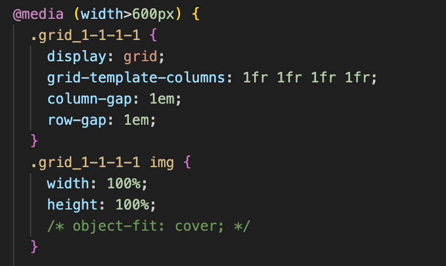

02: STUDIESTARTSPRØVEN
Tema 2 var det første officielle tema, hvor vi for alvor skulle i gang med at kode. Her blev vi introduceret til HTML og CSS samt, hvordan en generel hjemmeside skal struktureres. Senere i forløbet arbejdede vi med mobilvenligt design og lærte, hvordan man implementerer billeder på en hensigtsmæssig måde. Læringen af disse værktøjer har haft stor betydning for min videre forståelse af arbejdet som multimediedesigner.
Ligesom alle tidligere årgange skulle vi – med vores nye viden – i gang med at kode vores første hjemmeside. Det fungerede som en lille prøve for at se, om vi var klar til at fortsætte på uddannelsen.
Vi fik udleveret billeder og tekster, og derefter skulle vi blot følge den wireframe og det layoutdiagram, vi også havde fået tildelt. Min største udfordring var især at implementere designet korrekt, så hjemmesiden også blev mobilvenlig. Heldigvis blev det hurtigt løst, så snart jeg spurgte mine medstuderende om hjælp!
Se mit projekt her!: Alt det du skal vide om computere